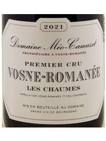
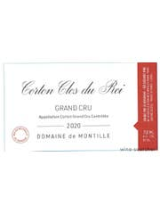
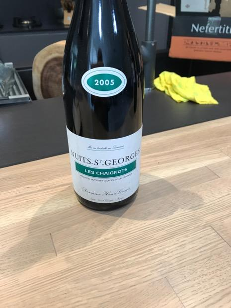

Featured Wines

Tasting Notes & Serving Guidance:
Typical Style: Aux Boudots usually combines Nuits structure with Vosne perfume: think refined tannin, red-to-dark cherry fruit, floral lift, and more aromatic finesse than a typical NSG. Collectors often treat it as a bridge wine between Nuits and Vosne.
What to Expect from Your Bottle: For your 2005 Méo Boudots, expect something potentially silky but still serious: floral and spice notes if it's open, with enough structure that it may need some time in glass.
Site Details: 6.31-hectare Premier Cru at the northernmost end of Nuits-Saint-Georges. East-southeast-facing slope at 250–285 meters elevation. Soils are marl-rich stony loam over Bathonian limestone.

Tasting Notes & Serving Guidance:
Typical Style: Within a lineup like yours, Les Chaumes is generally the bottle that shows the most obvious Vosne character: aromatic, supple, spicy, and seductive earlier than the Nuits wines, while still having 2005 backbone.
What to Expect from Your Bottle: This is likely the most fragrant, least structurally severe, and best candidate to drink first in your lineup. That said, because it's still 2005 red Burgundy, it may open reserved and then gain perfume with air.
Aroma Profile (from notes): Black fruits, game, cassis, elderberry, beet root, salty stony minerality, savory soy and meat juice.
Palate (from notes): Firm but ripe, rich in mouth, striking length, will become silky with age.

Tasting Notes & Serving Guidance:
Typical Style: Aux Murgers tends to be elegant rather than heavy, with bright black fruit, spice, floral lift, minerality, silky tannins, and fresh acidity. Often described as another Nuits cru that bridges toward Vosne in polish.
What to Expect from Your Bottle: Among the Méos, this one may be a touch more mineral, tensile, and inward than Chaumes at first. Expected to reward air with a more linear, aristocratic profile.
Site Details: Vines planted in 1965 and 1972 according to tastingbook.com, with grapes that ripen early while retaining striking acidity.

Tasting Notes & Serving Guidance:
Typical Style: Official regional guidance describes red Corton as intense, velvety crimson, with aromas of fruit, violet, and with age: underbrush, leather, pepper, and liquorice. On the palate: well-built, powerful, muscular, chewy, sensual, and structured.
What to Expect from Your Bottle: Your 2005 de Montille Corton Clos du Roi is likely the broadest-shouldered wine here: more power, more Corton authority, and probably the one most likely to need the longest runway. It's the bottle to save for last in the lineup.
Site Details: Hill elevation 250–330 meters with southeast to southwest exposures. Red Corton has reddish, pebbly soils derived from limestone with marl and high potassium content.

Tasting Notes & Serving Guidance:
From tasting notes: Farmy nose, positive fruit, built structure. Full red colour, good fruit that built and built, excellent with cheeseboard.
Serving Recommendation: Decant 1 hour; serve at 15–18°C.

Tasting Notes & Serving Guidance:
Aroma Profile: Dark plums, full bloom red rose, spices, sweet spices, menthol, violets, dark fruit.
Palate: Great acidity, medium tannins, ruby/purple color, endless layers of sweet spices.
Serving Recommendation: Decant 2–3 hours; serve at 16–18°C.